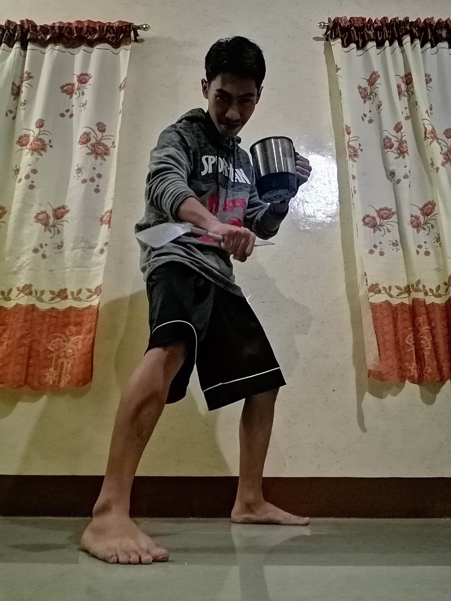

About Me
Hello, My name is Vincent Royce Salazar. I am 22 years old and currently living at Lipa City. I am a Computer Engineering student. I am currently taking my On-The-Job Training at the IntegraNet Network Services. Welcome to my profile and I hope you enjoy your stay!
